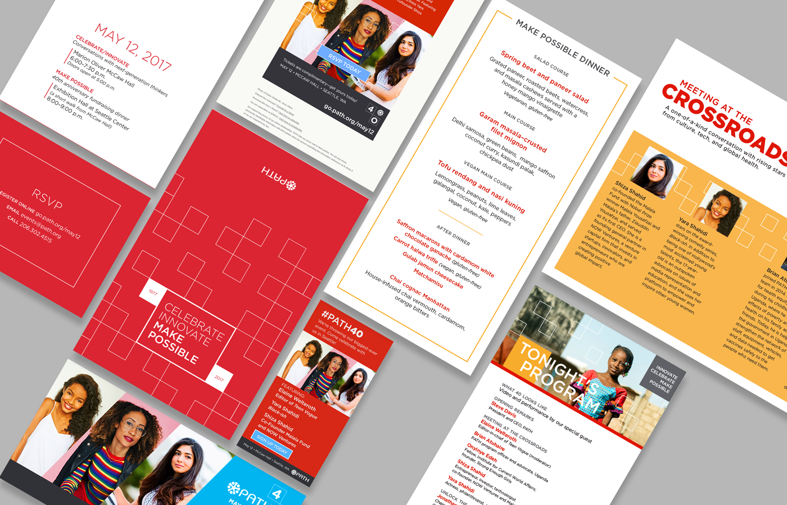

Lead designer for a fundraising event to celebrate PATH's 40th anniversary. I created brand guidelines, templates, and everyone's favorite--swag.
I was the design lead on PATH's 40th anniversary celebration. The key piece of this celebration was an event. I started with the creation of an invitation, developed a mood board and look/feel, and interfaced with vendors and production agencies to carry the design through to completion.
The squares in the 40th logo bug were envisioned to be "steps" or moments in PATH's history and future. Almost like a shorthand for a DNA sequence, or a schematic.
One of the pieces I'm most proud of is this video, which I directed creatively. It looked incredible on the large screen we had on stage at McCaw Hall.
I also designed a tote bag for each of PATH's 1500 employees. The PATH office in China printed a few bags for their 40th anniversary celebration. We decided to use the same factory they had used, but design a bag that used our 40th anniversary logo.
I worked with a translator in PATH's China office to interface with the factory. We chose a fabric type and color, and created a screen printed design. The minimalist "confetti" design I created was one of many I sketched out, but I like the energy it had. Once the bags were through production, they were shipped to PATH offices all over the world.